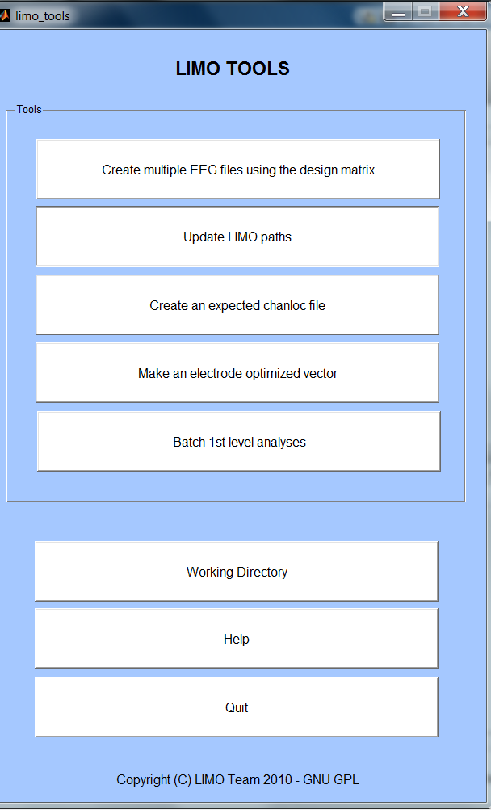

Create multiple EEG files using the design matrix
Allows exporting the various conditions (trials) coded in the design matrix into single files.
Update LIMO paths
LIMO.mat files created during any analyses also keep track of where your data are stored. If you move the files to another location, use this tool to update the paths.
Create an expected chanloc file
In order to analyze data across subject we need to create a common space – this is achieved by reading the channel description of your subjects and creating a file that uses electrodes that are in common.
See LIMO_Clustering.pdf (in the help directory) for further information in clustering and the what the neighboorhood matrix should look like.
Make an electrode optimized vector
This allows to create a vector that contain the description of the electrodes to use subject-wise, i.e. data are analyzed for one electrode only but this electrode can be different for each subject. This also create a map plotting the location and frequency of the electrodes choosen.
Batch 1st level analyses
Importing data subject per subject, and loading variables is time consuming. Instead you can use this batch to run the analysis automatically across all subjects. Make sure you have a directory per subject containing the .set and the variables you want to use (categorical and/or continuous). |To make things even faster use the same names for the categorical and continuous variables. When loading the batch, few questions pop up to process the 1st subject, if succesfull and you answer that the same defaults parameter applies, it will then loop through all subjects load the data and variables and run the analysis.
The batch can also be use to automate contrast analyses.